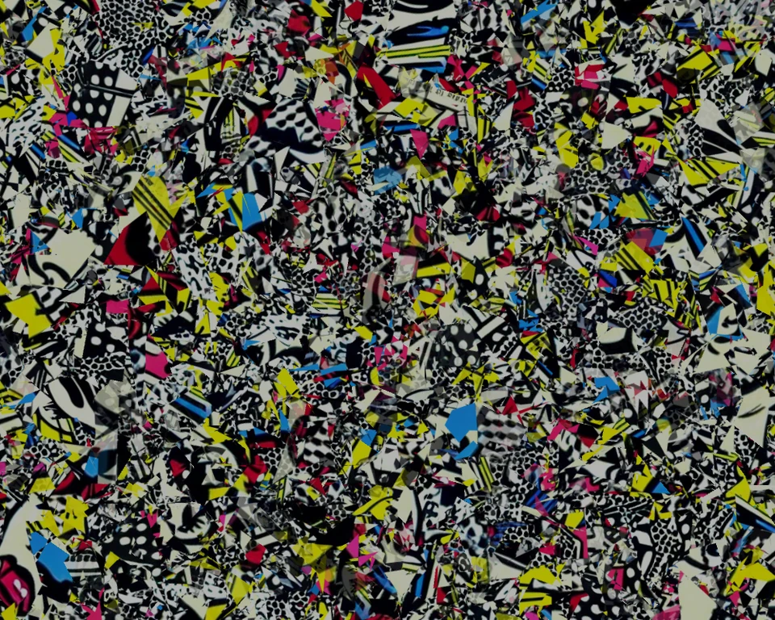
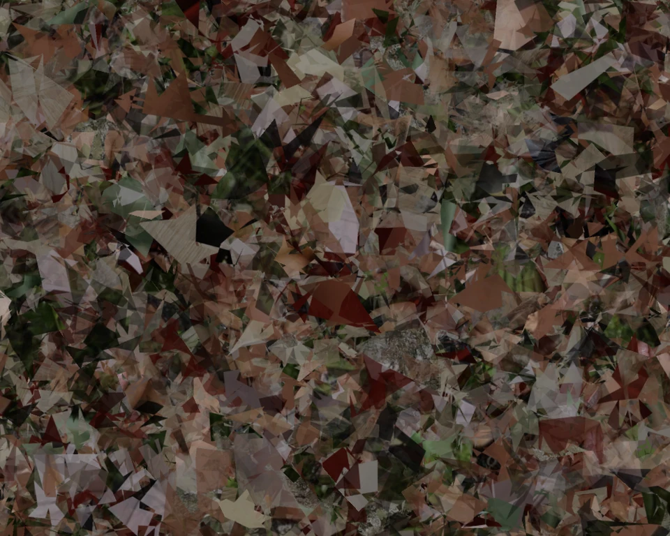
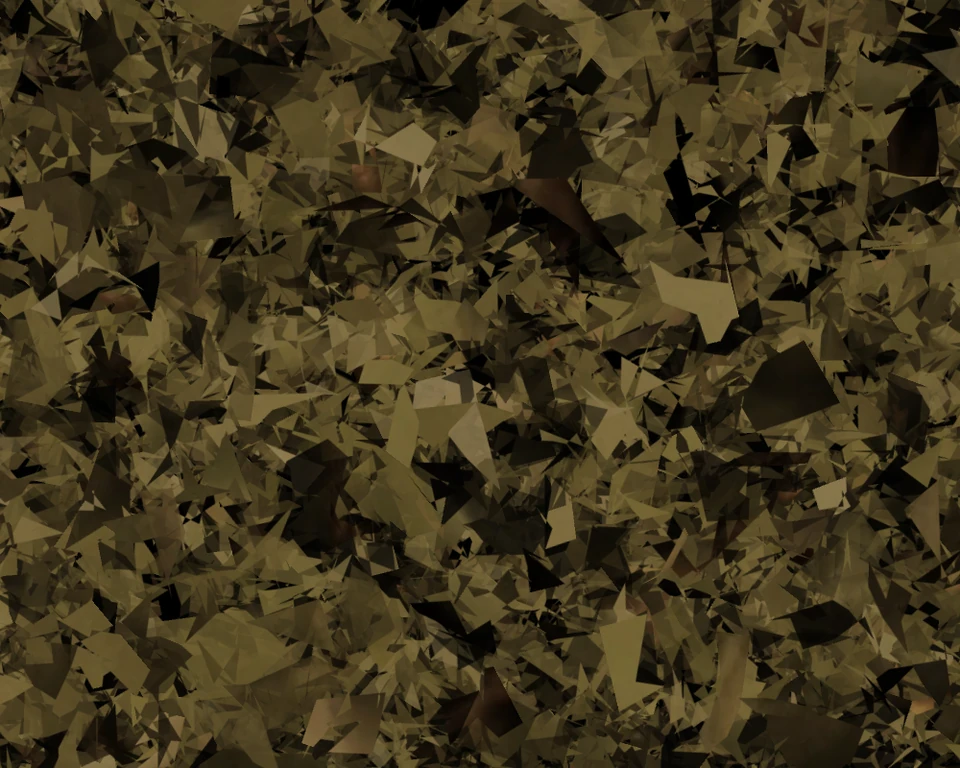

CF—GA—001 / 2026
Processing Studies
Fragments accumulate. An image takes shape.
Four still outputs made with Processing scripts by Roger Link. Bright color, patterned fragments, muted photographic textures, and a restrained ochre field offer four different densities of the same fragmented visual language. These are saved images, not a live browser animation. Collection and image captions are descriptive working labels.






